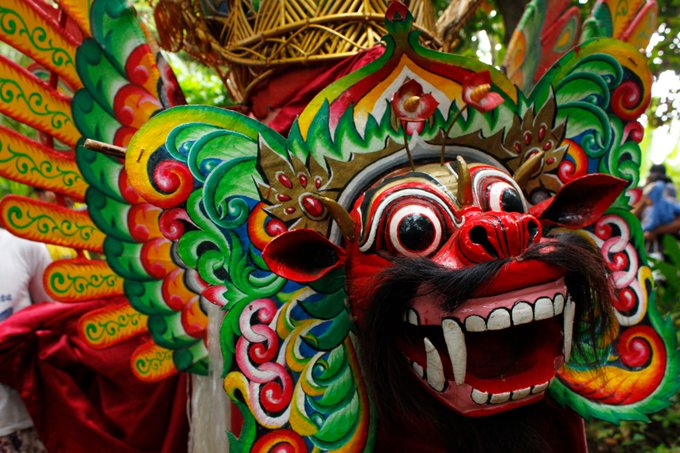
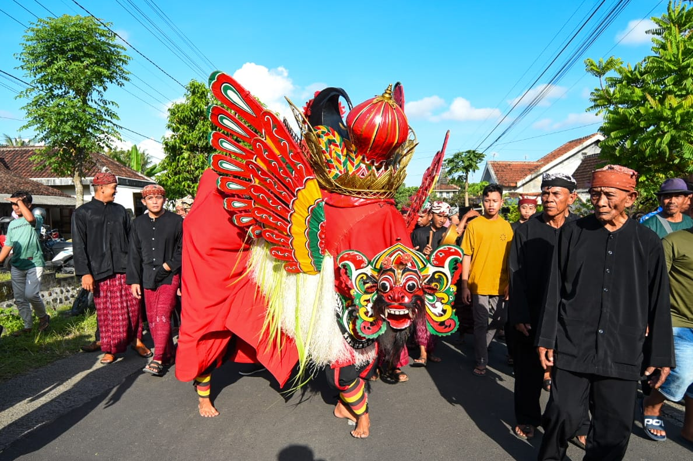
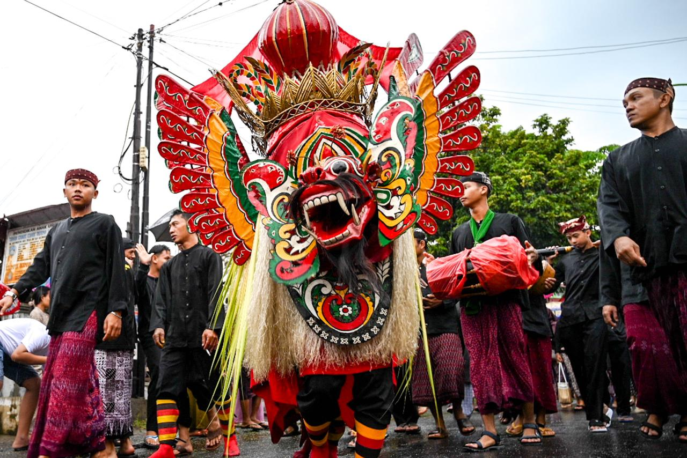

📜 Sejarah
Barong Using merupakan salah satu kesenian tradisional khas masyarakat Suku Using di Kabupaten Banyuwangi. Kesenian ini telah ada sejak lama dan diwariskan secara turun-temurun sebagai bagian dari identitas budaya masyarakat Using.
Awalnya, Barong Using sering ditampilkan dalam berbagai upacara adat dan dipercaya memiliki nilai spiritual yang berkaitan dengan perlindungan serta keselamatan masyarakat. Kesenian ini menjadi bagian integral dari kehidupan sosial dan spiritual masyarakat Using.
Seiring perkembangan zaman, Barong Using tidak hanya menjadi bagian dari ritual adat, tetapi juga berkembang menjadi pertunjukan seni yang memperkenalkan kekayaan budaya Banyuwangi kepada masyarakat luas. Hingga kini, Barong Using tetap dilestarikan dan menjadi salah satu ikon budaya Banyuwangi yang paling dikenal.
💭 Makna Filosofis
Barong Using bukan sekadar pertunjukan seni, tetapi juga mengandung berbagai nilai kehidupan yang penting bagi masyarakat:
🦁 Kekuatan dan Keberanian
Melambangkan kekuatan dan keberanian dalam menghadapi berbagai tantangan hidup. Sosok Barong menggambarkan semangat yang kuat untuk melindungi dan mempertahankan nilai-nilai kehidupan.
🛡️ Simbol Perlindungan
Menjadi simbol perlindungan dan keselamatan bagi masyarakat. Keberadaan Barong dipercaya dapat menolak bala dan memberikan keamanan.
⚖️ Keseimbangan Hidup
Mengajarkan pentingnya menjaga keseimbangan antara manusia, alam, dan kehidupan sosial. Harmoni ini menjadi dasar kehidupan masyarakat Using.
🏛️ Penghormatan Tradisi
Mencerminkan penghormatan terhadap tradisi serta warisan budaya leluhur yang harus dijaga dan dilestarikan untuk generasi mendatang.
🎭 Prosesi Pertunjukan
Pertunjukan Barong Using biasanya diawali dengan persiapan para penari dan pemusik yang mengenakan busana tradisional khas Banyuwangi.
1. Persiapan
Para penari dan pemusik mempersiapkan diri dengan mengenakan busana tradisional khas Banyuwangi. Kostum Barong yang merupakan hewan mitologis disiapkan dengan cermat.
2. Tokoh Barong
Tokoh utama dalam pertunjukan ini adalah Barong, yang dimainkan oleh beberapa orang di dalam kostum berbentuk hewan mitologis. Kostum ini dibuat dengan detail dan warna yang mencolok.
3. Pertunjukan
Selama pertunjukan, Barong akan menari mengikuti iringan musik tradisional yang khas. Gerakannya lincah, energik, dan penuh makna simbolis yang menggambarkan kekuatan dan perlindungan.
4. Ritual Adat
Dalam beberapa acara adat, pertunjukan juga disertai ritual tertentu sebagai bentuk penghormatan terhadap tradisi yang telah diwariskan oleh para leluhur.
✨ Fakta Menarik
Ikon Budaya Banyuwangi
Barong Using merupakan salah satu ikon budaya yang paling dikenal di Banyuwangi dan menjadi kebanggaan masyarakat setempat.
Berbeda dengan Barong Bali
Meski memiliki nama yang sama, bentuk dan ciri Barong Using berbeda dengan Barong yang ada di Bali. Barong Using memiliki karakteristik khas masyarakat Osing.
Musik Tradisional
Pertunjukannya selalu diiringi musik tradisional yang membuat suasana semakin meriah dan menambah nilai spiritual pertunjukan.
Festival Budaya
Kesenian ini sering tampil dalam berbagai festival budaya dan menjadi daya tarik bagi wisatawan yang berkunjung ke Banyuwangi.
Tetap Lestari
Hingga saat ini, Barong Using masih terus dilestarikan sebagai warisan budaya masyarakat Using dan diajarkan kepada generasi muda.
📸 Galeri




